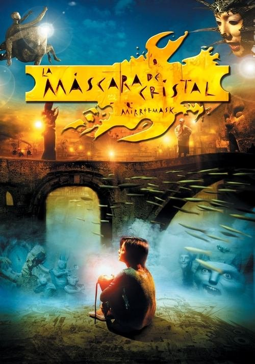

La máscara de cristal (2005)
Sinopsis Rápida
¿Qué pasaría si la persona que más amas se convirtiera en tu peor pesadilla? Una mujer descubre una máscara antigua que desata una fuerza oscura, poniendo en riesgo su cordura y su vida.
Sinopsis Detallada
En 'La máscara de cristal', una joven encuentra una misteriosa máscara que parece otorgarle poderes sobrenaturales. Sin embargo, estos poderes traen consigo una terrible maldición que afecta a su mente, su entorno y las personas que la rodean. La película explora los límites de la sanidad mental, el poder de las antiguas artes oscuras y la fragilidad de la identidad. Una serie de eventos sobrenaturales y perturbadores llevan a la protagonista a un descenso a la locura, donde la realidad se desdibuja y la línea entre la ilusión y la verdad se vuelve borrosa. El final te dejará reflexionando sobre la naturaleza del mal y la fuerza de la voluntad humana.
¿Por qué tenés que verla?
- Una trama inquietante que te mantendrá al borde de tu asiento.
- La atmósfera tensa y la dirección de arte crean una experiencia visualmente impactante.
- Aunque no sea una película muy conocida, explora temas relevantes sobre la fragilidad mental y las consecuencias de las acciones.
- Un final impactante e inesperado.
Idea Extra
Análisis de los simbolismos y la mitología presentes en la máscara y su influencia en la trama.
{{CONTENIDO_RELACIONADO}}